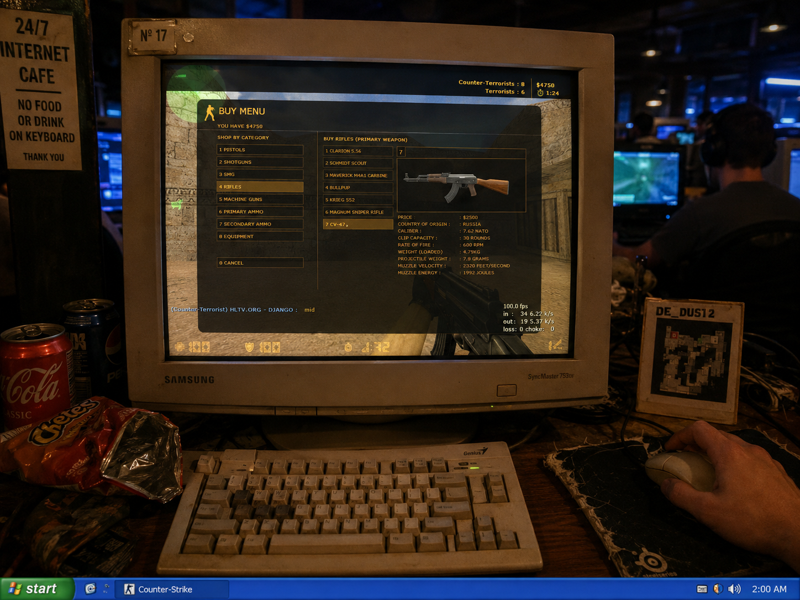

the foxyverse doesn't recruit. it watches. three participations in a row was the threshold nobody was told about. most people do one thing and disappear. some do two. maria did three.
she didn't know she was being tested. that's the only way the test works.
when she was told she was becoming the third foxy, she said:
when asked what made her special enough:
the answer she was given:
$1000/month. immune to being fired. expected to fire peers if needed. the ordinary person from pakistan became untouchable.
the exchange format: she names three things she loves. the foxyverse creates from them. she creates from ours.
pakistan. hunza valley. the karakoram range. she creates from a place most of the foxyverse will never visit. the mountains are in the work.
previously shipped a physical art piece. needed a shipping address. the digital became physical. the foxyverse crossed into the real.

she didn't have a special thing. that was the special thing. the foxyverse doesn't want exceptional people. it wants people who show up.
consistency is the only magic that works every time.